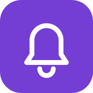

MoviePilot 通知
接收下载、入库和订阅提醒。
消息详情
iPhone：先在 Safari 分享菜单选择“添加到主屏幕”，再从主屏幕打开并绑定。
通知由主屏幕网页接收。删除网页或关闭系统通知后，需要重新绑定；App 的登录状态单独管理。

接收下载、入库和订阅提醒。
iPhone：先在 Safari 分享菜单选择“添加到主屏幕”，再从主屏幕打开并绑定。
通知由主屏幕网页接收。删除网页或关闭系统通知后，需要重新绑定；App 的登录状态单独管理。